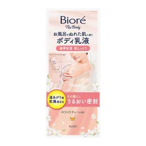

気軽に始めたい人

ビオレ ザ ボディ
お風呂でぬれた肌に使うボディ乳液 本体セット 285ml
285ml
¥968税込・出典掲載価格
選び方と声
- 選ぶ条件：寒い脱衣所で塗るのが面倒で、まず手ごろに試したい人。商品ページの説明では、本体セット285ml・ホワイトティーの香り・お風呂でぬれた肌に使う。同じシリーズに無香料・金木犀の香りもある。花王の公式：湯あがり直後に浴室で体全体に3〜4プッシュが目安、タオルで軽く押さえて水分を取る。
- ベタつかず伸びがいい、お風呂の中で済ませられて楽、という声が多い
気になる声気になる点：ホワイトティーの香りは好みが分かれる、という声がある。塗ったあとの肌はすべりやすいので、かかと・足の裏は避ける
販売価格・容量・送料はリンク先でご確認ください